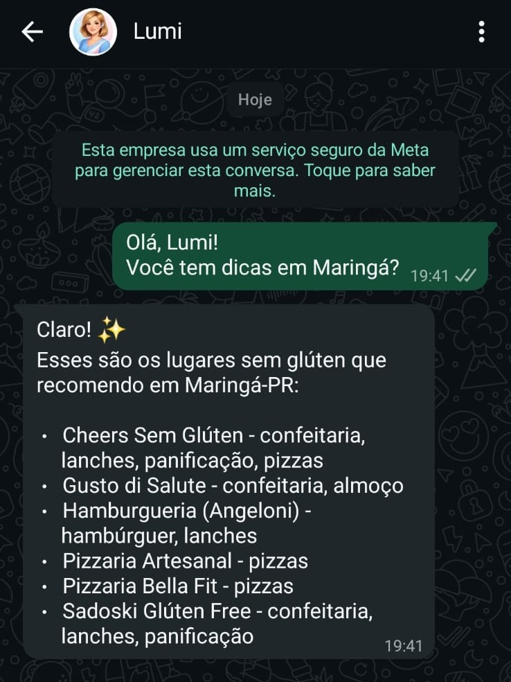
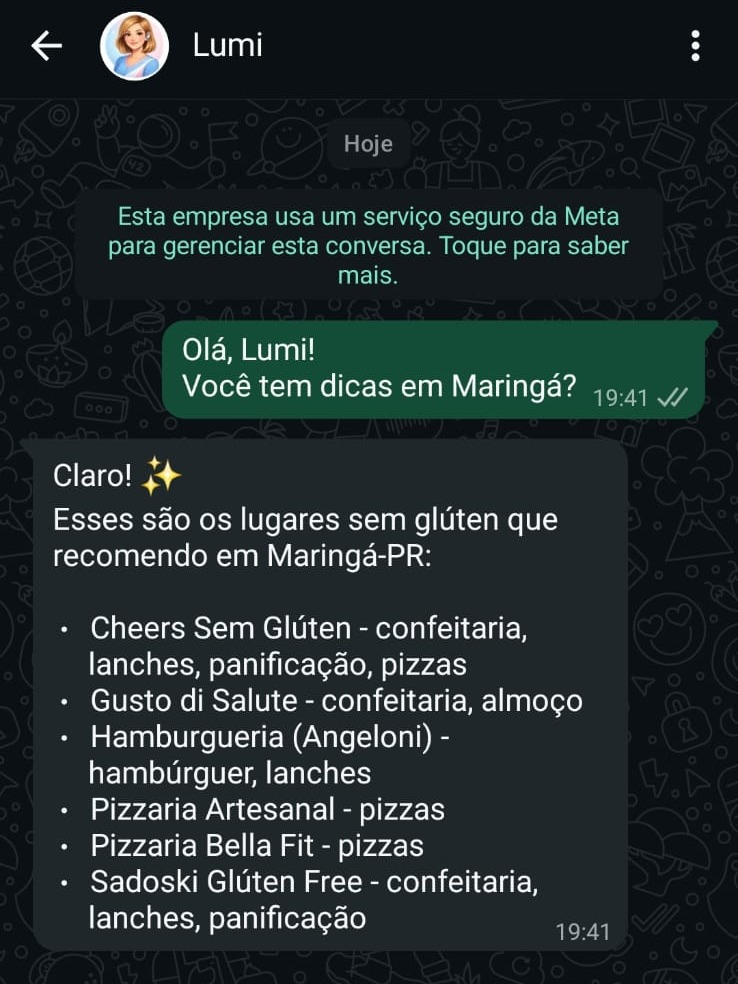
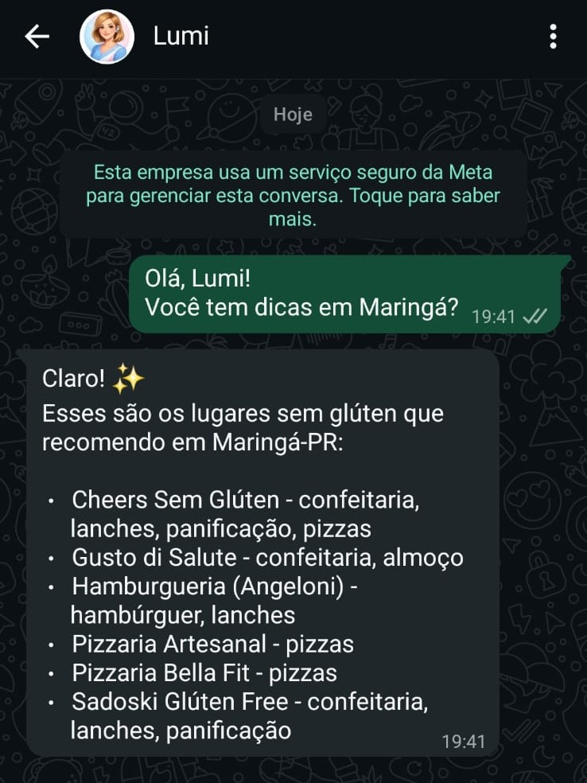

Veja a Lumi em ação
 

Descubra se marcas são seguras para celíacos, analise ingredientes por foto e encontre lugares confiáveis com rapidez - direto no seu WhatsApp!
Começar agoraSaiba rapidamente se a marca é segura para celíacos.
Receba indicações de restaurantes confiáveis no Brasil.
Envie a foto da composição do cosmético e saiba se é seguro ou não.

✔ Consultas ilimitadas de marcas
✔ Análisa da presença de glúten em cosméticos
✔ Lista de locais confiáveis no Brasil
✔ Atualizações constantes
Sou celíaca há 14 anos, praticamente o mesmo tempo em que vivo e respiro tecnologia. Ao longo desse caminho, aprendi na prática como pode ser difícil ter certeza do que é realmente seguro consumir.
Essa insegurança constante foi o que me motivou a criar a Lumi. A ideia era simples: usar tecnologia para transformar dúvida em clareza. Hoje, a Lumi é uma assistente inteligente no WhatsApp que, em segundos, ajuda a descobrir se um produto é seguro para celíacos — combinando listas confiáveis, como as certificações da ACELPAR, com o conhecimento da comunidade celíaca.
Ela também analisa ingredientes a partir de uma foto nítida da composição de produtos cosméticos ou de higiene pessoal.
Com o tempo, percebi que essa necessidade de segurança não está só no supermercado. Ela também aparece quando viajamos, saímos para comer ou exploramos um novo lugar. Por isso, a Lumi também indica lugares sem glúten certificados e/ou confiáveis no Brasil (e em breve no mundo!) — para que você possa viver experiências novas com mais tranquilidade.
A Lumi nasceu para que pessoas celíacas vivam com mais independência, leveza e confiança. E eu tenho certeza de que ela vai se tornar sua melhor amiga sem glúten daqui pra frente ✨
Começar agora